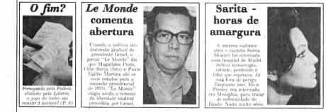
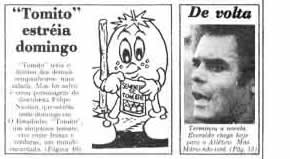
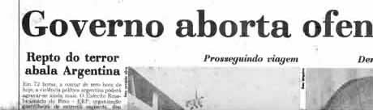
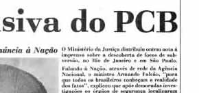

Em comemoração aos 46 anos do lançamento do TOMITO,
abaixo exibimos a manchete publicada em 31/JANEIRO/1975.
Visite os links abaixo para ver a reportagem e as páginas do TOMITO.


Em comemoração aos 46 anos do lançamento do TOMITO,
abaixo exibimos a manchete publicada em 31/JANEIRO/1975.
Visite os links abaixo para ver a reportagem e as páginas do TOMITO.


 |
 |
|
 |
 |
|
O
ESTADO DO PARANÁ
EXEMPLAR CR$ 1,50 - ANO XXIV - CURITIBA, SEXTA-FEIRA,
31 DE JANEIRO DE 1975
- NÚMERO 7.101 - 16 PÁGINAS / 1 SUPLEMENTO
"Tomito"
estréia
domingo
"Tomito"
teria o
destino dos demais
companheiros: uma
salada. Mas foi salvo
e virou personagem do
desenhista Felipe
Nicolau, que estréia
neste domingo em
O Estadinho. "Tomito",
um simpático tomate,
vive entre frutas e
verduras, um mundo
encantado. (Página 16)
| VOLTAR |